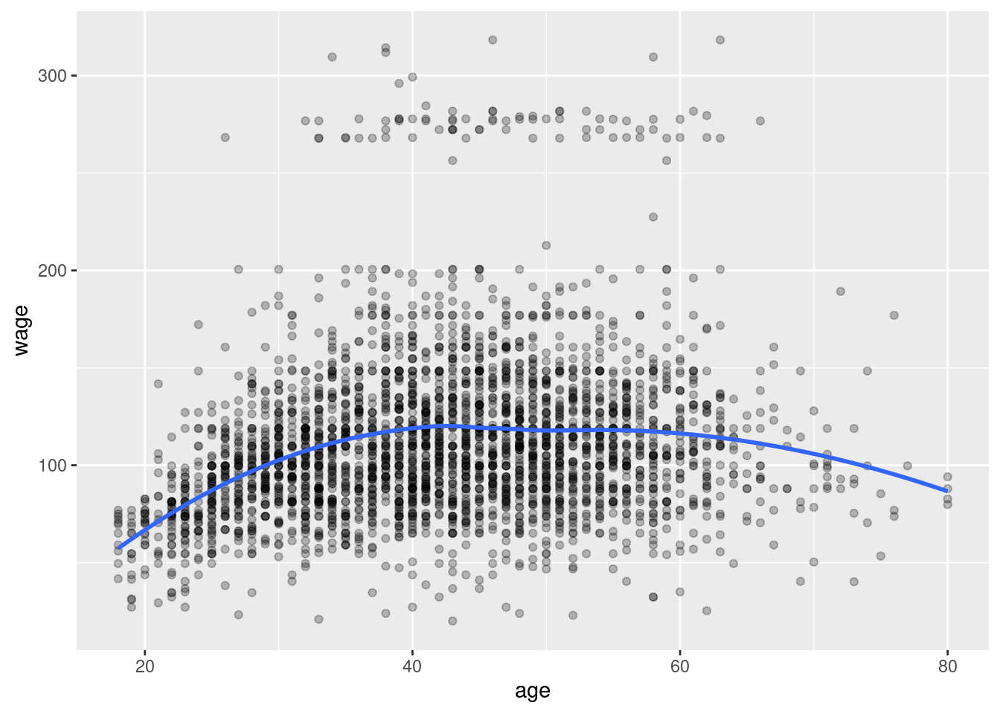
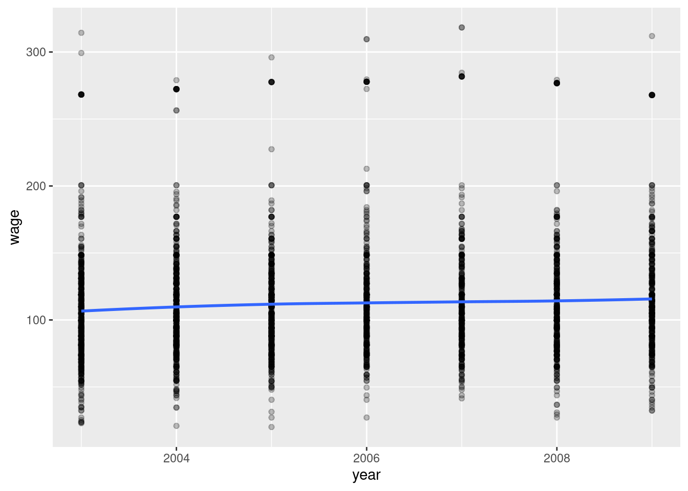
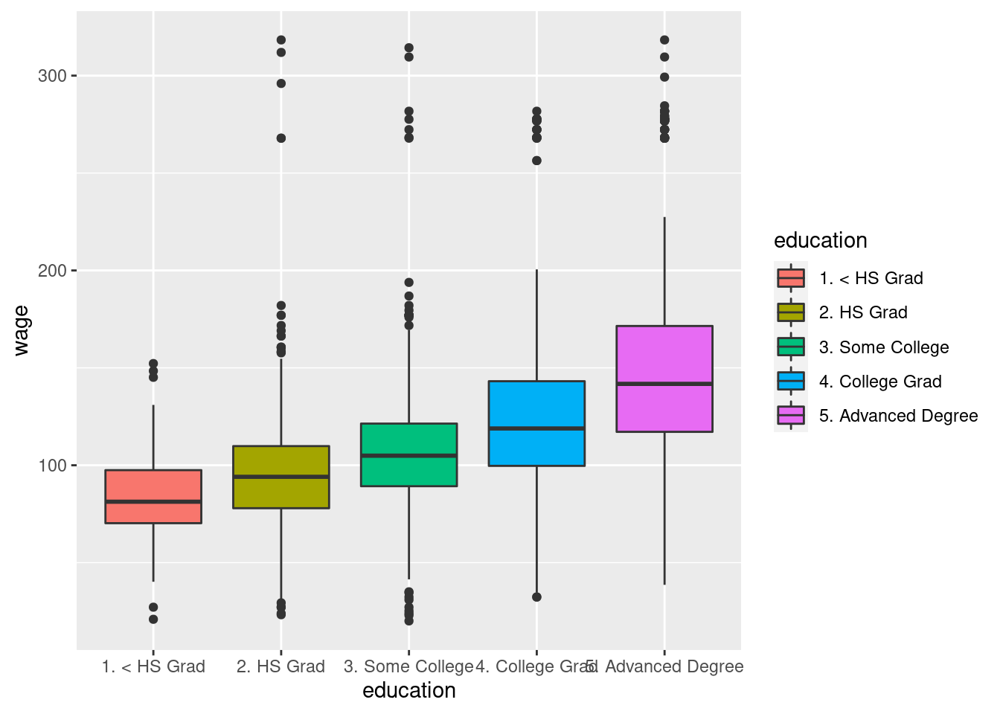
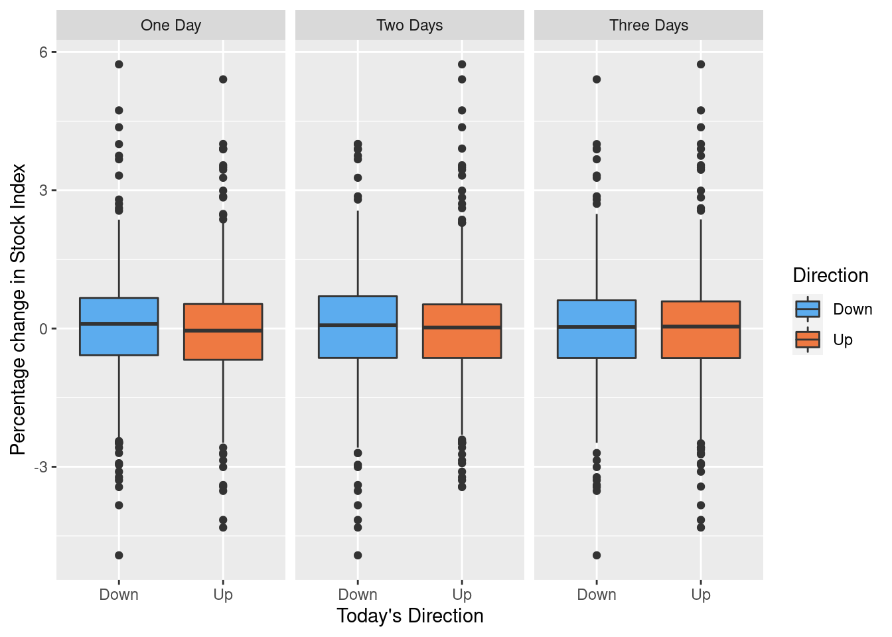

Chapter 1 Introduction
1.1 An Overview of Statistical Learning
“Statistical learning refers to a vast set of tools for understanding data.”
- Supervised: Using statistical models to predict or estimate outputs based on inputs.
- Unsupervised: Finding relationships between variables and structure in the data
1.2 Data sets
Example data used in the book
- Wages
- Stock Market Data
- Gene Expression Data
1.2.1 Wages
Used for regression problem examples such as predicting wage based on age and education
glimpse(Wage)## Rows: 3,000
## Columns: 11
## $ year <int> 2006, 2004, 2003, 2003, 2005, 2008, 2009, 2008, 2006, 2004,…
## $ age <int> 18, 24, 45, 43, 50, 54, 44, 30, 41, 52, 45, 34, 35, 39, 54,…
## $ maritl <fct> 1. Never Married, 1. Never Married, 2. Married, 2. Married,…
## $ race <fct> 1. White, 1. White, 1. White, 3. Asian, 1. White, 1. White,…
## $ education <fct> 1. < HS Grad, 4. College Grad, 3. Some College, 4. College …
## $ region <fct> 2. Middle Atlantic, 2. Middle Atlantic, 2. Middle Atlantic,…
## $ jobclass <fct> 1. Industrial, 2. Information, 1. Industrial, 2. Informatio…
## $ health <fct> 1. <=Good, 2. >=Very Good, 1. <=Good, 2. >=Very Good, 1. <=…
## $ health_ins <fct> 2. No, 2. No, 1. Yes, 1. Yes, 1. Yes, 1. Yes, 1. Yes, 1. Ye…
## $ logwage <dbl> 4.318063, 4.255273, 4.875061, 5.041393, 4.318063, 4.845098,…
## $ wage <dbl> 75.04315, 70.47602, 130.98218, 154.68529, 75.04315, 127.115…
1.2.2 Stock Market Data
Used for classification problem examples with categorical or qualitative output, such as predicting whether a stock index will either increase or decrease on any given day.
Daily percentage change of S&P 500 stock index and 5 prior days
glimpse(Smarket)## Rows: 1,250
## Columns: 9
## $ Year <dbl> 2001, 2001, 2001, 2001, 2001, 2001, 2001, 2001, 2001, 2001, …
## $ Lag1 <dbl> 0.381, 0.959, 1.032, -0.623, 0.614, 0.213, 1.392, -0.403, 0.…
## $ Lag2 <dbl> -0.192, 0.381, 0.959, 1.032, -0.623, 0.614, 0.213, 1.392, -0…
## $ Lag3 <dbl> -2.624, -0.192, 0.381, 0.959, 1.032, -0.623, 0.614, 0.213, 1…
## $ Lag4 <dbl> -1.055, -2.624, -0.192, 0.381, 0.959, 1.032, -0.623, 0.614, …
## $ Lag5 <dbl> 5.010, -1.055, -2.624, -0.192, 0.381, 0.959, 1.032, -0.623, …
## $ Volume <dbl> 1.1913, 1.2965, 1.4112, 1.2760, 1.2057, 1.3491, 1.4450, 1.40…
## $ Today <dbl> 0.959, 1.032, -0.623, 0.614, 0.213, 1.392, -0.403, 0.027, 1.…
## $ Direction <fct> Up, Up, Down, Up, Up, Up, Down, Up, Up, Up, Down, Down, Up, …
1.2.3 Gene Expression Data
Used for examples of clustering problems such as identifying related groups of cancer cells based on observed characteristics.
str(NCI60)## List of 2
## $ data: num [1:64, 1:6830] 0.3 0.68 0.94 0.28 0.485 ...
## ..- attr(*, "dimnames")=List of 2
## .. ..$ : chr [1:64] "V1" "V2" "V3" "V4" ...
## .. ..$ : chr [1:6830] "1" "2" "3" "4" ...
## $ labs: chr [1:64] "CNS" "CNS" "CNS" "RENAL" ...1.3 History
A brief timeline for the development of statistical learning
- 1800’s Linear Regression (Method of Least Squares)
- 1936 Linear Discriminant Analysis developed to predict qualitative values
- 1940s Logistic Regression developed to predict qualitative values
- 1970s Generalized Linear Models including both logistic and linear regression
- 1980s Classification and Regression Trees
- 1986 Generalized Additive Models
- Present day (2001) Machine Learning
1.4 Other Considerations
"How Eugenics Shaped Statistics: Exposing the damned lies of three science pioneers.
1.5 Matrix Notation
Conventions used in the book
\(n\) number of observations in a sample
\(p\) number of variables
\(\textbf{X}\) an \(n \times p\) matrix
- where \(x_{ij}\) represents the element in the \(i\)th row and the \(j\)th column.
- \(x_i\) represents a single observation (row) as a vector with length \(p\). Note that vectors are written vertically by convention in math notation.
- \(\textbf{x}_j\) represents a single variable (column) as a vector with length \(n\). Note that the bold face font is used to distinguish columns (\(\textbf{x}_3\)) from rows (\(x_3\)).
The \(^T\) superscript operator denotes the transpose of a matrix or vector, where row and column indices are reversed such that the resulting matrix or vector will have \(p\) rows and/or \(n\) columns.
Examples
A matrix of elements \[ \textbf{X} = \left( \begin{matrix} x_{11} & x_{12} & \dots & x_{1p} \\ x_{21} & x_{22} & \dots & x_{2p} \\ \vdots & \vdots & \ddots & \vdots \\ x_{n1} & x_{n2} & \dots & x_{np} \end{matrix} \right) \]
A row vector \[ x_i = \left(\begin{matrix} x_{i1} \\ x_{i2} \\ \vdots \\ x_{ip} \end{matrix} \right) \]
A column vector \[ \textbf{x}_j = \left(\begin{matrix} x_{1j} \\ x_{2j} \\ \vdots \\ x_{nj} \end{matrix} \right) \]
A matrix represented as a collection of column vectors \[ \textbf{X} = \left( \textbf{x}_1, \textbf{x}_2, \dots, \textbf{x}_j \right) \]
A transposed matrix. Rows become columns and columns become rows \[ \textbf{X}^{T} = \left( \begin{matrix} x_{11} & x_{12} & \dots & x_{1n} \\ x_{21} & x_{22} & \dots & x_{2n} \\ \vdots & \vdots & \ddots & \vdots \\ x_{p1} & x_{p2} & \dots & x_{pn} \end{matrix} \right) \]
A transposed row vector. Again, vector elements are listed vertically by default, so this presentation shows the new orientation. \[ x_{i}^{T} = \left( x_{i1}, x_{i2}, \dots, x_{ip} \right) \]
A matrix represented as a collection of row vectors \[ \textbf{X} = \left( \begin{matrix} x_{1}^T \\ x_{2}^T \\ \vdots \\ x_{n}^T \end{matrix} \right) \]